| Weapon | Name | Stance | Acquire |
| 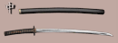 | 中庸刀 Chyuu-you-tou | Middle | Starting Sword |
| 活火山 Katsu-ka-zan | Middle | ドナドナ Don's Sword | |
| 愛染 Ai-sen | Middle | 黒生邑咲 Murasaki's Sword | |
| 二代菊正 Ni-dai-kiku-masa | Middle | 日向隼人 Hyuga's 1st Sword | |
| 毒虫 Doku-mushi | Middle | Black 1% Red 0.5% | |
| 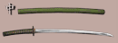 | ウラオトギ Ura-otogi | Middle | Black 1% Red 2.5% |
| 東風 Ton-puu | Middle | Red 2.3% | |
| 初代玉光 Shyo-dai-tama-hikari | Middle | Red 14% | |
| 中元 Chyuu-gen | Middle | Black 0.5% Red 10.5% | |
| 権太 Gon-buto | Middle | Red 0.5% GovernmentS 5% | |
| 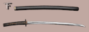 | 一発丸 Ip-patsu-maru | Down | 坪内八郎 Tsubohachi's Sword |
| 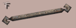 | 十六門 Jyuu-roku-mon | Down | 保世大佐エ門 Jose's Weapon |
| 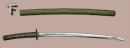 | マワルセカイ Mawaru-se-kai | Down | Black 2.5% |
| 網走 A-bashiri | Down | Black 13.4% | |
| 馬並 Uma-nami | Down | Black 16.2% GovernmentS 5% | |
| 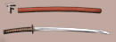 | オホーツク 0-hootsuku | Down | Black 0.8%, Red 1.0% GovernmentS 5% |
| 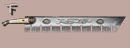 | 十万石 Jumangoku | Down | Black random |
| 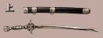 | 大黒生 Oo-kuro-nama | Up | 黒生鉄心 Tesshin's Sword |
| 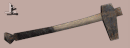 | 竹富士 Take-fu-ji | Up | 堂島軍二 Dojima's Hammer |
| 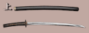 | 恐山 Osore-zan | Up | Red 10% |
| 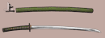 | 鬼火 Oni-bi | Up | Black 0.8% GovernmentS 10.5% |
| 当方不敗 Tou-hou-fu-hai | Up | Black 1.3% GovernmentS 5% | |
| 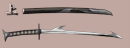 | 鮫肌刀 Same-hada-tou | Up | 刈部星雲 Karibe's Sword |
| 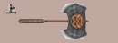 | 鉄観音 Tekkannon | Up | Red random |
| 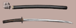 | 十戒丸 Jyuk-kai-maru | Side | 知床総一郎 Shiretoko's Sword |
| 花鳥風月 Ka-chyou-fuu-getsu | Side | 東横苑仙 Toyoko's Sword | |
| 千草 Chi-gusa | Side | Black 7.5% | |
| 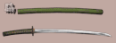 | 浮雲 Uki-kumo | Side | Black 6.3% Red 1.5% |
| 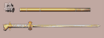 | ニイタカヤマ Nii-taka-yama | Side | 玉川上水 G. Tamagawa's Sword |
| 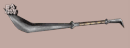 | 失乐园 Shitsurakuen | Side | Red random GovernmentS random |
| 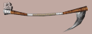 | 断末魔 Danmatsuma | Side | Red random |
| 妹守辰政 (STRIFE) Imono-kamino-tatsumasa | Side | すず (Suzu) Sword 3200PT L+Start | |
| 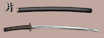 | 神風 Kami-kaze | One-hand | 吉兆 Kitcho's Sword |
| 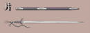 | 微熱 Bi-netsu | One-hand | チェルシー Chelsea's Sword |
| 彼岸 Hi-gan | One-hand | Black 2.5% | |
| 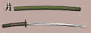 | 大納言 Dai-na-gon | One-hand | GovernmentB 70% |
| 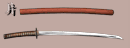 | 紅天女 Kurenai-ten-nyo | One-hand | Red 1.8% GovernmentB 5% |
| 巨峰 Kyoho | One-hand | Black random | |
| 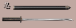 | 残月 Zan-getsu | Ninja | 日向隼人 Hyuga's 2nd Sword |
| 忍者刀 Nin-ja-tou | Ninja | Ninja 95% | |
| 忍者力 Nin-ja-zikara | Ninja | Ninja 5% | |
| 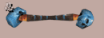 | 亲不知 Oyashirazu | Ninja | Ninja random |
| 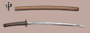 | なまくら刀 Nama-kura-gatana | Middle | Black 37.4% |
| なまくら刀 Nama-kura-gatana | Middle | Red 28.7% GovernmentS 15% | |
| なまくら刀 Nama-kura-gatana | Down | Black 8.8% GovernmentB 20% | |
| なまくら刀 Nama-kura-gatana | Up | Red 16.2% | |
| なまくら刀 Nama-kura-gatana | Side | GovernmentS 40% | |
| なまくら刀 Nama-kura-gatana | One-hand | GovernmentS 30% | |
| ハルユキ HARUYUKI | Up | Cheat Black 1 (vs CPU) | |
| タクマ TAKUMA | Down | Cheat Black 2 (vs CPU) | |
| ユミコ YUMIKO | One-hand | Cheat GovernmentB (vs CPU) |